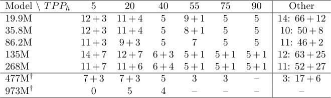
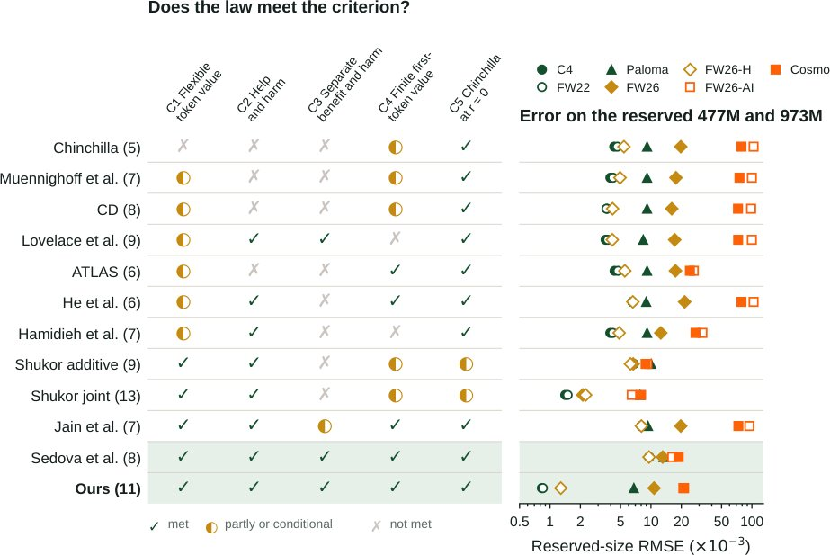
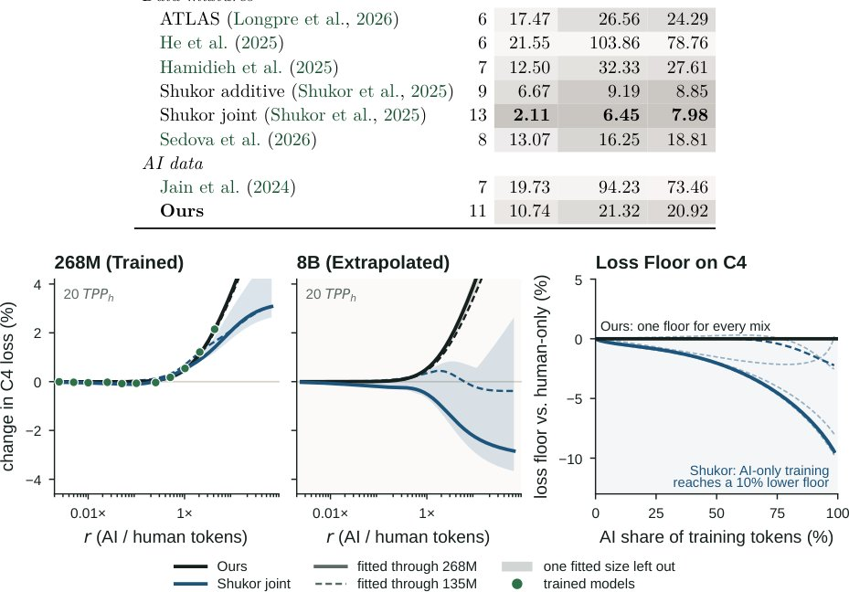

Почему обучение нейросетей на контенте от ИИ ведет к деградации моделей

Полное описание рисунка
Рисунок 1. Сгенерированный ИИ веб-текст помогает только моделям с дефицитом данных и в противном случае требует вычислительных затрат. Слева: доля веб-токенов в документах Pangram 3.3.2, помеченных как ИИ или смешанные, по месяцам. Доля только ИИ составляет 10% в июне 2024 года, 16% в июне 2025 года, 28% в июне 2026 года и 31% в августе 2026 года. В центре: значение нашего закона для одного добавленного ИИ-токена при 268 млн параметров, в человеческих токенах, от 5 до 100 TPPh: положительное при 5 TPPh, ниже нуля начиная с 20 TPPh, как только превышает около 0,08. Справа: вычислительные затраты на нефильтрованный веб-краулинг должны соответствовать обучению на его человеческом подмножестве при 20 TPPh (268 млн параметров) для его ИИ-доли: 1,6× при 31% в августе 2026 года и 2,1× и 3,0× при прогнозах 42% и 51% на конец 2027 и 2028 годов.
Интернет заполняется контентом, созданным нейросетями, что меняет качество данных для обучения новых моделей. Авторы работы проанализировали 800 моделей и доказали, что «дикий» ИИ-текст вредит обучению, если его доля превышает критический порог. Вместо бесконечного расширения датасетов за счет ИИ-контента, эффективнее повторять качественные человеческие тексты.
Главное
- Доля ИИ-контента в веб-данных достигла 31,1% к августу 2026 года.
- ИИ-текст полезен только для моделей с дефицитом данных, далее он вредит.
- Фильтры FineWeb и DCLM ошибочно отдают предпочтение сгенерированному контенту.
Методы и точность
| Метод | Данные | Точность | Где ошибается |
|---|---|---|---|
| Pangram 3.3.2 | Веб-тексты Common Crawl | FPR 0,05%, FNR 1,99% | Может ошибаться на старых текстах |
| FineWeb фильтрация | Common Crawl документы | Пропускает ИИ-текст в 2,3 раза чаще | Предвзятость к ИИ-контенту |
Подробнее
Исследователи использовали корпус WildAI (83 млрд токенов) и классификатор Pangram 3.3.2 для разделения данных на человеческие и сгенерированные. Анализ показал, что доля ИИ-контента в Common Crawl выросла с 10,1% в 2024 году до 31,1% к августу 2026 года. Существующие фильтры качества, такие как FineWeb и DCLM, парадоксальным образом пропускают ИИ-текст в 2,3–9,8 раза чаще, чем человеческий.
Для оценки влияния авторы обучили 800 моделей (от 19,9 млн до 973 млн параметров). Выяснилось, что для моделей с малым объемом данных ИИ-текст может быть полезен, но при достижении Chinchilla-оптимального бюджета (20 токенов на параметр) польза исчезает. Дальнейшее добавление ИИ-токенов начинает повышать ошибку (loss), что требует в 1,6–3 раза больше вычислительных мощностей для компенсации вреда.
Ограничения
Исследование ограничено моделями до 973 млн параметров и не учитывает влияние на сверхкрупные LLM (десятки и сотни миллиардов параметров).
Подробный разбор статьи
Резюме
Основу современных корпусов для предварительного обучения нейросетей составляет веб-контент, доля которого, созданного искусственным интеллектом (ИИ), стремительно растет. Согласно анализу FineWeb, в июне 2026 года 27,5% токенов в веб-данных были классифицированы системой Pangram как сгенерированные ИИ, а к августу этот показатель достиг 31,1%. В отличие от контролируемых синтетических данных, этот «дикий» ИИ-контент создается множеством различных моделей, изначально ориентирован на людей и попадает в обучающие выборки без маркировки.
Важно
Доля ИИ-контента в веб-данных выросла с 27,5% до 31,1% за два месяца 2026 года, что создает риски для качества обучения моделей.
Для оценки влияния такого контента авторы обучили 800 языковых моделей с количеством параметров от 19,9 млн до 973 млн. В процессе обучения варьировалось соотношение ИИ-токенов и человеческих токенов, после чего строились графики зависимости функции потерь (loss) на отложенных выборках. Для моделей с дефицитом данных добавление ИИ-токенов на начальном этапе снижает потери на человеческих текстах, однако эффект быстро насыщается и сменяется деградацией качества. Для моделей, обучаемых на больших объемах человеческих текстов, добавление ИИ-токенов увеличивает потери практически сразу, тогда как аналогичное количество новых человеческих токенов продолжает улучшать результат.
Пояснение
Функция потерь (loss) — это метрика, показывающая, насколько предсказания модели отличаются от реальных данных; чем ниже значение, тем лучше модель усвоила материал.
Существующие законы масштабирования, такие как Chinchilla, не учитывают различия между типами данных. Авторы предложили новую модель масштабирования с разделением факторов пользы и вреда, которая позволяет оценить ценность ИИ-токена в эквиваленте человеческих токенов. На малых моделях этот закон предсказывает влияние ИИ-текста на потери для моделей, которые в 3,6 раза крупнее, с точностью на 41% выше, чем у существующих аналогов. Согласно расчетам, обучение на нефильтрованном веб-контенте с долей ИИ 31,1% требует в 1,6 раза больше вычислительных мощностей для достижения того же качества, что и на «чистых» человеческих данных.
Осторожно
При доле ИИ-контента 22,3% смешанные валидационные выборки скрывают негативное влияние на качество обучения в 95,5% случаев, что делает необходимым раздельный мониторинг метрик.
Введение
Интернет стремительно заполняется контентом, созданным искусственным интеллектом. Согласно данным Pangram, доля ИИ-текстов, прошедших фильтры качества FineWeb, выросла с 10,1% в 2024 году до 27,5% в июне 2026 года, достигнув 31,1% к августу 2026 года (Рис. 1). Параллельно с этим современные модели обучаются на объемах данных, значительно превышающих «оптимальный по вычислительным затратам» уровень в ~20 токенов на параметр: например, Qwen3-32B использует около 1100 токенов на параметр. Прогнозы показывают, что все доступные человеческие тексты будут исчерпаны к 2032 году. Это ставит перед разработчиками вопрос: как использовать ИИ-контент в обучающих выборках?
Полное описание рисунка
Рисунок 1. Сгенерированный ИИ веб-текст помогает только моделям с дефицитом данных и в противном случае требует вычислительных затрат. Слева: доля веб-токенов в документах Pangram 3.3.2, помеченных как ИИ или смешанные, по месяцам. Доля только ИИ составляет 10% в июне 2024 года, 16% в июне 2025 года, 28% в июне 2026 года и 31% в августе 2026 года. В центре: значение нашего закона для одного добавленного ИИ-токена при 268 млн параметров, в человеческих токенах, от 5 до 100 TPPh: положительное при 5 TPPh, ниже нуля начиная с 20 TPPh, как только превышает около 0,08. Справа: вычислительные затраты на нефильтрованный веб-краулинг должны соответствовать обучению на его человеческом подмножестве при 20 TPPh (268 млн параметров) для его ИИ-доли: 1,6× при 31% в августе 2026 года и 2,1× и 3,0× при прогнозах 42% и 51% на конец 2027 и 2028 годов.
Важно
Доля ИИ-текста в сети достигла 31,1% к августу 2026 года, а модели уже обучаются на объемах данных, многократно превышающих классические Chinchilla-оптимальные значения.
Авторы исследуют влияние «дикого» ИИ-текста — контента, созданного моделями для людей и естественно встречающегося в сети, в отличие от синтетических данных, специально подготовленных для обучения. В работе обучено 800 моделей (от 19,9 млн до 973 млн параметров) с добавлением до 64 «диких» ИИ-токенов на каждый человеческий токен. Оценка проводилась на наборах C4, FineWeb и Paloma. Выяснилось, что ИИ-текст полезен только для моделей с дефицитом данных: он снижает потери (loss) при обучении, если объем данных менее 10 токенов на параметр. Однако при достижении Chinchilla-оптимума (20 токенов на параметр) польза исчезает, а дальнейшее увеличение доли ИИ-токенов лишь повышает потери, в то время как свежие человеческие данные продолжают их снижать.
Пояснение
«Дикий» ИИ-текст — это неконтролируемый контент, который модели пишут для людей, попадающий в обучающие выборки случайно, в отличие от курируемых синтетических датасетов.
Для описания этого эффекта предложен новый закон масштабирования, который учитывает насыщающуюся пользу и логарифмически растущий вред от ИИ-текста. Модель, обученная на параметрах до 268 млн, предсказывает поведение моделей в 3,6 раза крупнее с ошибкой RMSE 0,83 × 10⁻³, что значительно точнее существующих подходов (1,41 × 10⁻³ и 4,32 × 10⁻³). Исследование показывает, что текущие фильтры качества, такие как FineWeb и DCLM, ошибочно отдают предпочтение ИИ-контенту (в 2,3 и 9,8 раза чаще, чем человеческому). Обучение на нефильтрованном вебе с долей ИИ 31,1% требует в 1,6 раза больше вычислительных мощностей, чем обучение на чистых человеческих данных, а к 2028 году этот показатель вырастет до 3,0 раз. Авторы публикуют датасет WildAI (96 млн документов) и все 800 обученных моделей.
2 Измерение веб-данных, созданных ИИ
В данном разделе авторы описывают процесс формирования масштабного набора данных WildAI, разделенного на тексты, написанные людьми, и контент, сгенерированный ИИ. Исследование показало, что к июню 2026 года доля ИИ-контента среди токенов, прошедших фильтры качества FineWeb, достигла 27,5%, при этом показатель демонстрирует устойчивый ежемесячный рост. Авторы отмечают, что существующие фильтры (FineWeb и DCLM) фактически отдают предпочтение ИИ-текстам.
Сбор и классификация данных. Основой послужил корпус FineWeb, расширенный данными Common Crawl за период с июля 2025 по июнь 2026 года. Итоговый набор WildAI включает 96,04 млн документов (83,31 млрд токенов). Для классификации использовался двухэтапный подход: сначала модель EditLens Llama-3.2-3B проводила первичную разметку более 280 млрд токенов, затем более точный инструмент Pangram 3.3.2 выполнял контрольную проверку. В результате был сформирован человеческий корпус (58,91 млн документов, 42,19 млрд токенов) и ИИ-корпус (32,54 млн документов, 35,32 млрд токенов).
Пояснение
Pangram 3.3.2 — специализированный классификатор с низким уровнем ошибок: ложноположительный результат составляет 0,05%, ложноотрицательный — 1,99%, что позволяет эффективно разделять распределения данных.
Динамика и распределение контента. Анализ 310 000 документов за период с января 2021 по август 2026 года выявил резкий рост доли ИИ-контента: с менее 0,1% в июне 2021 года до 10,1% в 2024-м, 16,1% в 2025-м и 27,5% в июне 2026 года (Рис. 1, Рис. 8). К августу 2026 года показатель достиг 31,1%. Наблюдается дисбаланс: например, учебные материалы составляют 18,5% ИИ-контента против 6,2% человеческого, тогда как в личных блогах ситуация обратная (1,0% против 8,6%). Это указывает на то, что модели могут всё сильнее отклоняться от естественного человеческого распределения тем.

Важно
Доля ИИ-контента в веб-данных растет ежемесячно, достигнув 31,1% к августу 2026 года, при этом существующие фильтры качества пропускают ИИ-тексты значительно чаще, чем человеческие.
Эффективность фильтров. Аудит 10 000 документов Common Crawl показал, что фильтры FineWeb и DCLM предвзяты к ИИ-контенту. ИИ-тексты проходят через фильтрацию FineWeb в 2,3 раза чаще (29,3% против 12,8%), а через полный цикл DCLM — в 9,8 раза чаще (14,5% против 1,5%), чем тексты, написанные людьми (Рис. 2).

Полное описание рисунка
Рисунок 2. Веб-текст, размеченный ИИ, тяготеет к нескольким форматам и проходит фильтры качества чаще, чем человеческий текст. Слева: доля токенов каждого формата, размеченных ИИ, по отношению к доле токенов, размеченных человеком, с января по июнь 2026 года для пяти наиболее перепредставленных и недопредставленных форматов. Справа: доля документов, размеченных ИИ и человеком, в выборке Common Crawl 2026 года, оставшихся после каждого этапа FineWeb.
3 Основы и смежные работы
Фундаментальные законы масштабирования. Прогнозирование производительности обучения LLM опирается на три показателя: вычислительные затраты (C), количество параметров модели (N) и объем обучающих токенов (D). Базовая аппроксимация выглядит как C ≈ 6ND. Закон Chinchilla формализует эти зависимости, определяя потери на отложенной выборке.
Законы масштабирования для повторов. В оригинальной модели Chinchilla не учитывается разница между уникальными и повторяющимися токенами. Исследователи предложили поправки: одни вводят понятие «эффективного значения» токена, другие добавляют штраф за переобучение, третьи связывают ценность токена с размером модели.
Смеси данных и «коллапс модели». Существующие работы моделируют обучение на данных из разных доменов и языков. Отдельное направление изучает «коллапс модели» при рекурсивном обучении на синтетике. Выяснилось, что сохранение части реальных данных смягчает деградацию. При этом синтетические данные могут влиять на поведение модели даже без рекурсии, а их полезность зависит от общего бюджета данных и качества смешивания с веб-текстом.
Тексты ИИ в «дикой природе». В отличие от специально подготовленных синтетических датасетов, тексты, созданные ИИ и попавшие в интернет, пишутся для поисковиков и читателей. Они смешаны с человеческими данными, что создает уникальные условия для обучения. Существующие законы плохо предсказывают потери на таких данных (ошибка 8.00 против 0.83 у авторов статьи).
Важно
Традиционные законы масштабирования не учитывают специфику «диких» текстов ИИ, что приводит к значительным ошибкам прогнозирования потерь.
4 Законы масштабирования для человеческих и ИИ-текстов
Авторы предлагают новый закон масштабирования, который учитывает как пользу, так и вред от добавления ИИ-токенов. Он демонстрирует наименьшую ошибку прогнозирования (0.83 против 1.41 × 10⁻³ на датасете C4).
4.1 Эмпирические наблюдения
Методы. Было обучено 800 моделей размером от 19.9 млн до 973 млн параметров с использованием архитектуры NanoChat. Параметры варьировались: количество токенов на параметр (TPPh) от 2.9 до 87.5, соотношение ИИ-данных к человеческим (r) от 0 до 64. Оценка проводилась на наборах C4, Paloma, FineWeb (FW22, FW26) и Cosmopedia.
Пояснение
TPPh (Tokens Per Parameter) — показатель насыщенности обучения, определяющий, сколько данных «видит» каждый параметр модели.
Результаты. Модели, обученные только на человеческих текстах, следуют законам Chinchilla. Однако при добавлении ИИ-токенов поведение меняется: при малом бюджете человеческих данных ИИ-тексты помогают, а при большом — вредят. Например, при 5 TPPh ИИ-тексты снижают потери, а при 20 TPPh — увеличивают их (Рис. 3).

4.2 Критерии
Для создания точного закона масштабирования авторы выделили пять критериев: гибкость значения токена (зависимость от N, TPPh и r), способность моделировать как пользу, так и вред, интерпретируемость (разделение факторов влияния), конечное значение первого токена и восстановление закона Chinchilla при отсутствии ИИ-данных.
Осторожно
Наблюдаемый вред от ИИ-текстов усиливается с ростом размера модели и общего объема обучающих данных.
4.3 Законы масштабирования для ИИ-текстов
Мы разработали закон масштабирования, объединяющий архитектуру Chinchilla (уравнение 1) с учетом насыщающейся полезности ИИ-данных (уравнение 9) и штрафной функцией за избыточность ИИ-контента (уравнение 5). Наша модель достигает парной ошибки 0,83 × 10⁻³ на данных C4, что превосходит существующие аналоги (Таблица 1). Функция потерь L(N, D_H, D_A) учитывает объем параметров N, человеческие данные D_H и ИИ-данные D_A (уравнение 2).
Таблица 1. Paired RMSE × 10³ на отложенных размерах, чем меньше, тем лучше
| Модель | 1 | 2 | 3 | 4 |
|---|---|---|---|---|
| Chinchilla (Hoffmann et al., 2022) | 4.32 | 4.65 | 5.40 | 9.15 |
| Muennighoff et al. (2023) | 3.96 | 4.21 | 4.94 | 9.15 |
| CD (Qin et al., 2026) | 3.68 | 3.63 | 4.17 | 9.15 |
| Lovelace et al. (2026) | 3.55 | 3.74 | 4.14 | 8.38 |
| ATLAS (Longpre et al., 2026) | 4.36 | 4.72 | 5.51 | 9.15 |
| He et al. (2025) | 6.54 | 6.55 | 6.62 | 8.96 |
| Hamidieh et al. (2025) | 3.95 | 4.19 | 4.84 | 9.15 |
| Shukor additive (Shukor et al., 2025) | 6.77 | 6.70 | 6.26 | 10.05 |
| Shukor joint (Shukor et al., 2025) | 1.41 | 1.50 | 2.25 | 7.80 |
| Sedova et al. (2026) | 9.60 | 9.59 | 9.57 | 13.32 |
| Jain et al. (2024) | 8.00 | 8.03 | 8.04 | 9.34 |
| Ours | 0.83 | 0.85 | 1.28 | 6.77 |
Польза ИИ-токенов моделируется через экспоненциальную форму кредита g(r), где r = D_A/D_H — доля ИИ-текста, а R^* — масштаб насыщения полезности. В отличие от моделей, считающих повторы безвредными, мы ввели штраф за вред (уравнение 4), который логарифмически замедляется с ростом объема ИИ-данных. Маргинальный вред достигает пика при равенстве объемов человеческих и ИИ-токенов (r=1). Мы протестировали закон на 726 моделях (19,9–268 млн параметров) и провели валидацию на 74 моделях (до 973 млн параметров).
Важно
Наш закон масштабирования точнее предсказывает потери, чем существующие модели, демонстрируя статистически значимое преимущество при работе с ИИ-контентом.
Пояснение
Масштабирование — это зависимость качества модели от объема данных и вычислительных мощностей.
5 Эффекты обучения на ИИ-текстах и рекомендации
Прогнозы показывают, что к концу 2028 года доля ИИ-токенов в наборе FineWeb достигнет 50,7%. Модели, обученные на нефильтрованных данных с текущим уровнем ИИ-контента, требуют в 1,6–3,0 раза больше вычислительных мощностей для достижения качества моделей, обученных на «чистых» данных. Мы рекомендуем удалять ИИ-тексты из обучающих выборок, а при нехватке данных — дублировать человеческие тексты, а не добавлять ИИ-генерацию.
5.1 Цена отсутствия фильтрации
Мы сравнили модели, обученные на смешанных данных (22,3% ИИ-контента) и на «чистых» человеческих подмножествах. Несмотря на меньший объем данных, модели на человеческих текстах показали более низкие потери на C4 (Рис. 5). Наш закон верно предсказал преимущество фильтрации в 18 из 19 случаев. Анализ с использованием случайного блуждания с дрейфом подтверждает, что из-за роста доли ИИ-текстов вычислительная эффективность моделей будет падать: для достижения уровня «чистой» модели в 2028 году потребуется в 3 раза больше ресурсов.

Полное описание рисунка
Рисунок 5. Фильтрация ИИ-текста окупается при больших человеческих бюджетах, а повторение человеческого текста эффективнее добавления ИИ-текста. Слева: изменение потерь при удалении ИИ-документов из 22,3% ИИ-смеси без их замены, предсказанное нашим законом (цвет; черная линия: без изменений) и измеренное (кружки; значения для 973 млн параметров). Справа: изменение потерь при повторении человеческого корпуса или добавлении такого же количества новых ИИ-токенов для моделей при 20 TPPh.
Осторожно
Использование ИИ-текстов для обучения оправдано только в том случае, если целевой задачей является генерация именно ИИ-подобного контента.
Пояснение
Фильтрация — процесс удаления низкокачественных или синтетических данных из обучающего корпуса для предотвращения деградации модели.
Лучше повторять человеческие данные или добавлять ИИ-данные?
Эксперименты с моделями 19,9 млн и 35,8 млн параметров показали, что повторение человеческих токенов эффективнее добавления ИИ-текстов. После одного цикла повторения потери на C4 были на 2,3% ниже, а после восьми циклов разрыв увеличился до 6,3–6,4%.
5.2 Когда обучение на ИИ-текстах оправдано?
Использование ИИ-контента полезно в условиях дефицита данных и при работе с целевыми ИИ-текстами. При прогнозировании человеческого текста ИИ-данные эффективны лишь при нехватке оригинальных материалов: оптимальная доля ИИ-текста в датасете C4 падает с 37% при бюджете 5 TPPh до 1,0% при 20 TPPh (Рис. 6). Аналогичные закономерности наблюдаются для наборов данных FW22 и Paloma. В случае же обучения на ИИ-текстах оптимальная доля остается выше 90% при любом бюджете, а ценность одного ИИ-токена превышает ценность 20 человеческих токенов (Таблица 7).

Полное описание рисунка
Рисунок 6. Зависит ли польза ИИ-текста от оценочного набора. Слева: доля ИИ в обучающих токенах, которая минимизирует предсказанные нашим законом потери при фиксированном человеческом корпусе, по оценочным наборам: около нуля для человеческого текста (C4, FW22), выше 90% для ИИ-текста (Cosmo) и падение с 98% до 34% для смешанного FW26; падение около 10 TPP — это точка, где оптимум перемещается между двумя локальными минимумами предсказанных потерь. Справа: для 243 ИИ-добавлений, которые увеличивают потери на размеченном человеком тексте FW26, медианное изменение потерь, которое показывает валидационный набор по мере роста доли текста, размеченного ИИ. Знак меняется на 5,1% ИИ; при 22,3% в нашем крауле 2026 года медианный прогон выглядит на 1,9% лучше.
Важно
Оптимальная доля ИИ-текста для обучения на человеческих данных снижается до 1% при увеличении вычислительного бюджета до 20 TPPh, тогда как для генерации ИИ-контента она превышает 90%.
Обучение на ИИ-текстах меняет стиль генерации моделей. В агентных рабочих процессах модели всё чаще взаимодействуют друг с другом, поэтому понимание ИИ-стилистики становится критичным. Однако это меняет и собственную генерацию: для моделей 268M количество типичных ИИ-фраз на 1000 слов возрастает с 0,16 (без ИИ-текста) до 0,36 при r=1 и до 0,54 при r=4. В тесте Pangram доля историй, классифицированных как ИИ-сгенерированные, удваивается (37,2% против 18,6%, Таблица 13).
Пояснение
r — это коэффициент соотношения ИИ-текста к человеческому тексту в обучающей выборке.
Авторы рекомендуют разделять ИИ и человеческие тексты при обучении и оценке. Модели, рассматривающие их как разные домены, показывают наибольшую точность. Разделение оправдано различиями в форматах: например, обучающие материалы составляют 18,5% ИИ-токенов, но лишь 6,2% человеческих. Поскольку ИИ-текст легче предсказуем, добавление его в выборку снижает потери на ИИ-сегменте FW26, но в 44% случаев повышает потери на человеческом сегменте. При текущей доле ИИ-текста в 22,3% (по данным краулинга 2026 года) смешанная валидация ошибочно интерпретирует 95,5% таких случаев как улучшения (Рис. 6). Рекомендуется отчитываться о потерях по человеческим и ИИ-текстам раздельно.
Заключение
Таблица 6. TPF выровненных бюджетов
| Бюджет | Значение |
|---|---|
| 1 | 26.93 |
| 2 | 28.41 |
| 3 | 29.74 |
| 4 | 30.91 |
477M не имеет бюджета 90; 973M не имеет бюджета 55, 75 или 90.
Таблица 11. Парные ошибки таблицы 1, ограниченные отложенными прогонами с r < 1
| Параметр | Значение |
|---|---|
| 1 | 2.93 |
| 2 | 3.18 |
| 3 | 3.82 |
| 4 | 7.75 |
Диапазон, достижимый веб-краулингом (наш краулинг 2026 года имеет r = 0.29; равное разделение ИИ и человеческого текста имеет r = 1).
Таблица 5. Thetraininggrid.Eachcellisonehuman-onlycontrolplusthenumberofAI-additionrunsand,after theplussign,fresh-human-additionrunsonthesamehumancorpus.Sizesmarked†,belowtherule,arereserved: everylawisscoredonthemandnoneisfittedonthem.


Таблица 2. ForecastAIshareofwebtokenseachDecember.TheintervalsareStudent-tpredictionintervalsthat includetheuncertaintyofthedrift.


Таблица 3. Thesevenmodelsizes.Allusethenanochatarchitecture.Ninthescalinglawscountstheinput embedding;thelastcolumnsubtractsit.Reservedsizes(†)enternofit.


Основные выводы
Доля сгенерированного ИИ текста в отфильтрованных веб-данных превысила 25% и продолжает расти. Анализ 800 предобученных моделей показал, что такой контент полезен лишь для моделей, испытывающих дефицит данных, тогда как для моделей, соответствующих закону масштабирования Chinchilla, он приводит к росту функции потерь. Предложенный нами закон описывает эффект насыщения пользы при логарифмическом росте вреда. Эта модель предсказывает параметры систем в 3,6 раза крупнее тех, на которых она обучалась, демонстрируя при этом меньшую ошибку на человеческих текстах, чем 11 существующих аналогов.
Важно
Обучение на нефильтрованном веб-контенте с учетом прогнозируемой доли ИИ-текста (31,1% к августу 2026 года) требует в 1,6 раза больше вычислительных мощностей, а к 2028 году этот показатель вырастет до 3,0 раз.
Ограничения и перспективы
Наш закон был откалиброван на моделях до 268 млн параметров и протестирован на системах до 973 млн параметров. Существует риск, что более крупные модели, склонные к запоминанию обучающей выборки, будут активнее перенимать паттерны слабых LLM. В текущем исследовании мы оценивали потери на следующем токене (next-token loss) и использовали только англоязычные веб-тексты, размеченные Pangram. Будущие исследования должны сосредоточиться на фильтрации «дикого» ИИ-контента, поиске доменов, где ИИ-текст приносит пользу, и разработке методов обучения, позволяющих моделям понимать ИИ-ввод без деградации собственного стиля письма.
Пояснение
Закон масштабирования Chinchilla — это эмпирическая зависимость, определяющая оптимальное соотношение между размером модели (количеством параметров) и объемом обучающих данных для достижения минимальных потерь.
Осторожно
Модели, использованные в эксперименте, недостаточно велики для оценки реальной производительности в сложных задачах, поэтому результаты носят предварительный характер.

Полное описание рисунка
Рисунок 4. Наш закон соответствует обученным моделям и предсказывает результаты для более крупных. Слева: наблюдаемое изменение потерь на C4 с помощью нашего закона. В центре: отложенные прогоны на 477 млн и 973 млн параметров при 20 TPPh в сравнении с нашим законом и Chinchilla. Chinchilla предсказывает, что ИИ-текст продолжает снижать потери; прогоны и наш закон показывают рост. Справа: предсказанное изменение против наблюдаемого для каждого прогона ИИ.


Полное описание рисунка
Рисунок 20. Повторение человеческого текста превосходит добавление ИИ-текста на оценочных наборах человеческого текста. Изменение потерь на каждом оценочном наборе при повторении человеческого корпуса или добавлении такого же количества новых ИИ-токенов по сравнению с токенами, добавленными на каждый человеческий токен. На наборах человеческого текста (C4, FW22, FW26-H) повторение снижает потери, тогда как ИИ-текст их повышает; на наборах ИИ-текста (FW26-AI, Cosmo) ИИ-текст снижает потери сильнее.


Полное описание рисунка
Рисунок 22. Смешанные проверочные данные скрывают вред для человеческого текста. Слева: потери каждой модели на ИИ-размеченной части по сравнению с человеческой размеченной частью FW26. Модели только на человеческих данных имеют на 12–27% более низкие потери на ИИ-тексте, а модели, обученные на ИИ-тексте, опускаются еще ниже линии равных потерь. Справа: из 243 добавлений ИИ, которые повышают потери на человеческом размеченном тексте, доля, которую проверочный набор показывает как улучшения, по мере роста доли ИИ-размеченного текста для подобранных размеров и отложенных размеров: 49,4% при 5% ИИ и 95,5% при 22,3% нашего набора 2026 года.


Таблицы
Таблица 4. Everymodelinthepaper.The800modelsofthescaling-lawcohortbysizeandarm:human-only controls,AIadditionsandfresh-humanadditions,eachadditiontrainedonexactlyitscontrol’shumandocuments. Sizes marked † are held out from every fit.TPPh:range over the controls.In Table 5:runs in the matched-budget grid,controlsincluded;theothersbelongtocontrolgroupsatper-sizebudgetsfromearlierrungenerationsand entereveryfitandscoreinthesameway.Otherseeds:runswithaseedotherthan1337.Belowtherule,the44 filteringandrepetitionmodels,whichenternofit.

Схема исследования
Препринт не проходил рецензирование. Выводы предварительные.
Источник
| Источник | Категория | Лицензия |
|---|---|---|
| arXiv | synthetic | arxiv |
Источники
| Источник | Ссылка |
|---|---|
| Страница препринта | arxiv.org |
| Полный текст (PDF) | arxiv.org |
| DOI | doi.org |
| Метаданные Crossref | api.crossref.org |
| Europe PMC | europepmc.org |